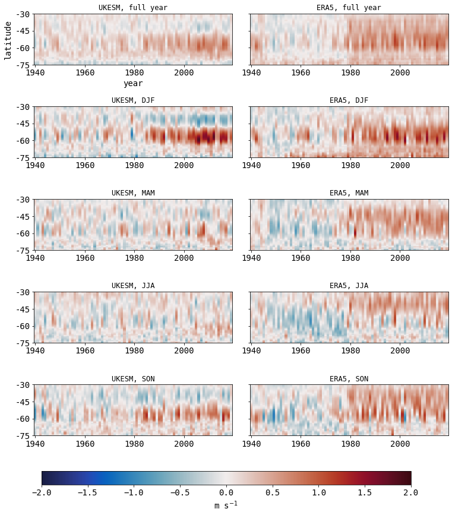
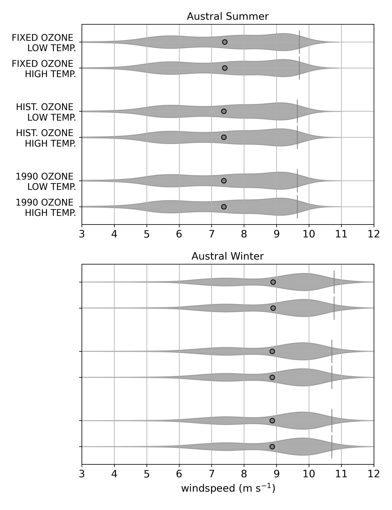
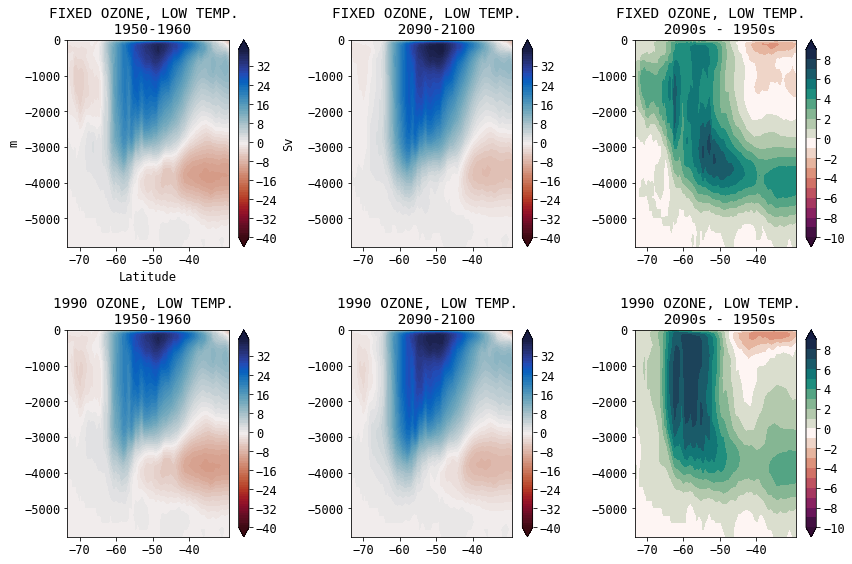
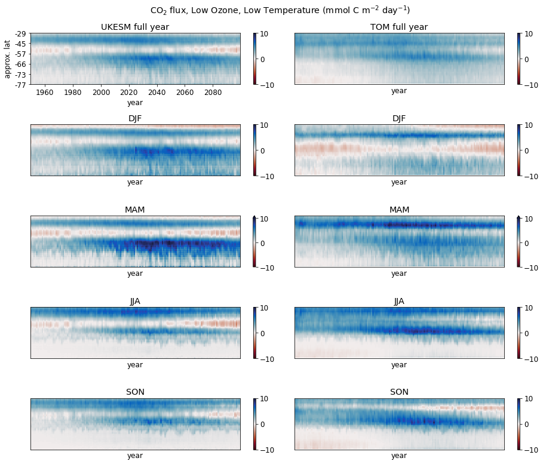

class: center, middle .title[Physical and Biogeochemical <br/> Ocean Effects of Changing Windspeed <br/> over the Southern Ocean ] <!-- .subtitle[] --> .author[Tereza Jarníková$^{1}$, Corinne Le Quéré$^{1}$, Steven Rumbold$^{2}$, Colin Jones$^{3}$] <!-- .author[RoSES Wrap-Up Meeting]<br/> --> .date[RoSES Wrap-Up Meeting <br/><br/> July 20, 2023] <br/> <img style="width:60%" src="./FIGS_ORGANIZED/2022SEP_CHALLENGER/logos.png"> <br/> <br/> .note[1- School of Environmental Sciences, University of East Anglia]<br/> .note[2- National Centre For Atmospheric Science, University of Reading]<br/> .note[3- National Centre For Atmospheric Science, University of Leeds] <br/> <br/> <br/><br/> <!-- url of slides for accessibility: <br/><br/> https://tjarnikova.github.io/pres/2022SEP_CHALLENGER.html --> --- name: background class: center <br/> #Guiding Questions <!-- <img style="width: 40%" src="./figs_2022_JUL_CELOS/NASA_and_NOAA_Announce_Ozone_Hole_is_a_Double_Record_Breaker.png"><br/> .note[South Pole O$_3$ concentration, September 2006, NASA] <br/><br/> --> .left-column[<img style="width:55%" src="./figs_2022_JUL_CELOS/NASA_and_NOAA_Announce_Ozone_Hole_is_a_Double_Record_Breaker.png"> <br/><br/><br/>.note[South Pole O$_3$ concentration, September 2006, NASA]] .right-column[<br/><img style="width:80%" src="./FIGS_ORGANIZED/2022SEP_CHALLENGER/co2meins.png"> <br/><br><br> .note[Two future greenhouse gas scenarios, <br/> Meinshausen et al., 2020] ] <br/><br/><br/><br/><br/><br/><br/><br/><br/><br/><br/><br/><br/><br/><br/><br/><br/> .date[1- How are the Southern Ocean wind patterns projected to change over the coming century <br/> under different ozone and SSP scenarios?] .date[2- What are the effects of changing wind patterns on the physical ocean sea state?] .date[3- What are the effects on the Southern Ocean carbon flux?] --- name: background class: center <br/> #Methods <img style="width: 65%" src="./FIGS_ORGANIZED/2022SEP_CHALLENGER/UKESM_planktom.png"><br/> <br/><br/> .date[We run the UKESM under six different ozone and greenhouse gas scenarios <br/> and analyze dominant trends in changing wind patterns.] .date[We analyze the physical and biogeochemical responses <br/> of the UKESM ocean model to these six scenarios.] .date[In parallel, we use the atmospheric fields from the six scenarios of UKESM to run a global ocean biogeochemical model (PlankTOM12) and compare its physical and carbon responses to those of UKESM.] <!-- we run PlankTOM12, <br/> a NEMO3.6 based global ocean biogeochemical model, for the time period 1940-2100 <br/> and analyze the evolution of the carbon sink. ] --> --- name: background class: center <br/> #Scenario Description <br/> <br/> <img style="width:70%" src="./figs_2022_JUL_CELOS/sspscen.png"> <br/> <br/> .note[Fixed: Ozone depleting substances fixed at 1950 values.]<br/> .note[Historic: Ozone depleting substances evolve realistically through time.]<br/> .note[1990: Ozone depleting substances fixed at 1990 values.]<br/> <br/> .note[Low Temp.: SSP 1-2.6]<br/> .note[High Temp.: SSP 3-7.0] --- name: model class: center #Seasonal Wind Speed Climatology, 1950-2020 <!-- .date[Due to stratospheric ozone depletion, summertime winds have intensfied significantly <br/> in the Southern Ocean in the second half of the 20th century. ] --> <img style="width:43%" src="./FIGS_ORGANIZED/2023JUL_CELOS/maps.png"> Climatological spatial windspeed structure is similar in UKESM and ERA. <br/> UKESM has typically stronger winds than ERA. --- name: model class: center #UKESM1 Wind Evaluation Against ERA5 <!-- .date[Due to stratospheric ozone depletion, summertime winds have intensfied significantly <br/> in the Southern Ocean in the second half of the 20th century. ] -->  <!-- https://adaood01.uea.ac.uk/node/c0126.hpc.private/34418/notebooks/scratch/SOZONE/windAnalyis/paperFigures/regridded_partAfigures.ipynb --> Windspeed increases in UKESM are more zonally localized than in the ERA reanalysis product. A better match is found south of -50 degrees. --- name: model class: center #UKESM1 Wind Evaluation Against ERA5 <br/> <br/> <br/> <!-- .date[Due to stratospheric ozone depletion, summertime winds have intensfied significantly <br/> in the Southern Ocean in the second half of the 20th century. ] --> South of -50 degrees, ERA and UKESM match in both the mean and the 95th percentile (sampled from daily values). Historical summer trends in windspeed increase are statistically significant, but weaker in UKESM. --- name: background class: center ##Southern Ocean Wind Climatology PDF: 1940-1960 <img style="width:52%" src="./figs_2022_JUL_CELOS/wspd_1940-1960.jpg"><br/> As expected, from 1940-1960 wind magnitudes are almost identical between 6 scenarios. <br/> Winter winds are stronger and somewhat less variable. --- name: background class: center ##Southern Ocean Wind Climatology PDF: 1940-1960 <br/> As expected, from 1940-1960 wind magnitudes are almost identical between 6 scenarios. <br/> Winter winds are stronger and somewhat less variable. --- name: background class: center ##Southern Ocean Wind Climatology PDF: Present-Day (2010-2030) <img style="width:52%" src="./figs_2022_JUL_CELOS/wspd_2010-2030.jpg"><br/> Under the historic and 1990 ozone scenarios, much larger summer increases in windspeed <br/> have occurred to date than in the fixed ozone scenario. Winter increases have been more modest in all scenarios. --- name: background class: center ##Southern Ocean Wind Climatology PDF: 2040-2060 <img style="width:52%" src="./figs_2022_JUL_CELOS/wspd_2040-2060.jpg"> <br/> By mid-century, the highest summer windspeed increases occur in the 1990 ozone, high temperature scenario. Temperature-dependent changes in windspeed increases start being visible in summer. --- name: background class: center ##Southern Ocean Wind Climatology PDF: 2080-2100 <img style="width:52%" src="./figs_2022_JUL_CELOS/wspd_2080-2100.jpg"> <br/> Under the historic ozone scenario, temperature is the deciding factor in late-century windspeed evolution: In the high temp. scenario, summer winds continue speeding up, while in the low temp. scenario, they slow down. --- name: background class: center ##Summary of Projected Southern Ocean Wind Speed Changes .date[We see a clear footprint of the effect of both changing temperature<br/> and changing ozone concentration in the UKESM1 atmospheric forcing.] <img style="width:75%" src="./figs_2022_JUL_CELOS/wspd_10yrmean.jpg"> <br/> Under the historical ozone scenario, temperature is the deciding factor in late-century wind speed evolution: <br/> In the high temperature scenario, summer winds continue speeding up, <br/> while in the lower temperature scenario, they slow down. --- name: background class: center ##Effect of Ozone on Wind Speed <br/><br/> <br/> Ozone depletion leads to a summertime increase in windspeed of around 0.8 m/s from 1950-2020 that then persists throughout the 21s century. <!-- Under the historical ozone scenario, temperature is the deciding factor in late-century wind speed evolution: <br/> In the high temperature scenario, summer winds continue speeding up, <br/> while in the lower temperature scenario, they slow down. --> --- name: background class: center ##Effect of GHG scenario on Wind Speed <br/><br/> <br/> Increased temperature due to GHG emissions leads to a slightly smaller gradual windspeed increase throughout the 21st century. The increase is strongest in summer but present in all seasons. --- name: background class: center ##Physical Ocean Response: Effects on Sea-Surface Temperature <!-- /gpfs/home/mep22dku/scratch/SOZONE/windAnalyis/paperFigures/ootw/Fig-MLD-SST-OVER-15panel.ipynb --> <br/><br/> As expected, sea surface temperature is forced by GHG scenario. --- name: background class: center ##Physical Ocean Response: Effects on Mixed-Layer Depth <!-- /gpfs/home/mep22dku/scratch/SOZONE/windAnalyis/paperFigures/ootw/Fig-MLD-SST-OVER-15panel.ipynb --> <br/><br/> In summer, mixed layer depth shoaling due to GHG-induced thermal stratification<br/> is opposed by deepening due to windspeed increases <br/> that are present in ozone-depletion scenarios. --- name: background class: center ##End-of-Century Summary of SST and MLD Effects <!-- /gpfs/home/mep22dku/scratch/SOZONE/windAnalyis/paperFigures/ootw/Fig-MLD-SST-OVER-15panel.ipynb --> <br/><br/> Taken over the whole time-series, austral-summer MLD deepening recovers under ozone recovery. Sea surface temperature follows GHG scenario. --- name: background class: center ##Preliminary Results: Overturning  <!-- /gpfs/home/mep22dku/scratch/SOZONE/overturning/long_ts_overturning.ipynb --> <br/><br/> Wind speed increases due to ozone depletion strengthen meridional overturning to the end of the 21st century. --- name: background class: center ##Preliminary Results: Overturning <!-- /gpfs/home/mep22dku/scratch/SOZONE/overturning/long_ts_overturning.ipynb --> <br/><br/> Increased thermal stratification in a high GHG scenario also strenghtens meridional overturning to the end of the 21st century. --- name: background class: center ##Evolution of the Southern Ocean Carbon Sink  <!-- https://adaood01.uea.ac.uk/node/c0126.hpc.private/34418/notebooks/scratch/SOZONE/MEDUSA/Cflx_MED_v2.ipynb --> <br/><br/> The two biogeochemical models have similar overall flux fields, but vary in both seasonality and latitudinal spatial patterns. --- name: background class: center ##Evolution of the Southern Ocean Carbon Sink <img style="width:90%" src="./FIGS_ORGANIZED/2023JUL_CELOS/sosink-ukesm.png"> <!-- https://adaood01.uea.ac.uk/node/c0126.hpc.private/34418/notebooks/scratch/SOZONE/MEDUSA/Cflx_MED_v2.ipynb --> <br/><br/> Taken over the entire Southern Ocean, UKESM carbon sink projections show almost no sensitivity to ozone scenario. --- name: background class: center ##Evolution of the Southern Ocean Carbon Sink <!-- https://adaood01.uea.ac.uk/node/c0126.hpc.private/34418/notebooks/scratch/SOZONE/MEDUSA/Cflx_MED_v2.ipynb --> <br/><br/> Taken over the entire Southern Ocean, UKESM carbon sink projections show almost no sensitivity to ozone scenario. Neither do the TOM12 ones. --- name: background class: center ##Evolution of the Southern Ocean Carbon Sink .left-column[] .right-column[] Intensification of CO$_2$ flux in both directions with windspeed increases may result in compensatory effects. --- name: background class: center ##Evolution of the Southern Ocean Carbon Sink <br/><br/> .left-column[<img style="width:100%" src="./figs_2022_JUL_CELOS/wspd_10yrmean.jpg">] .right-column[<br/>] <br/><br/><br/><br/><br/><br/><br/><br/><br/><br/><br/><br/> - Strong ozone and GHG-related summertime windspeed and temperature increases lead to clear effects on the physical oceanography of the Southern Ocean. - Two very different biogeochemical models agree well on both the total magnitude of the Southern Ocean carbon sink and its low sensitivity to ozone scenario.